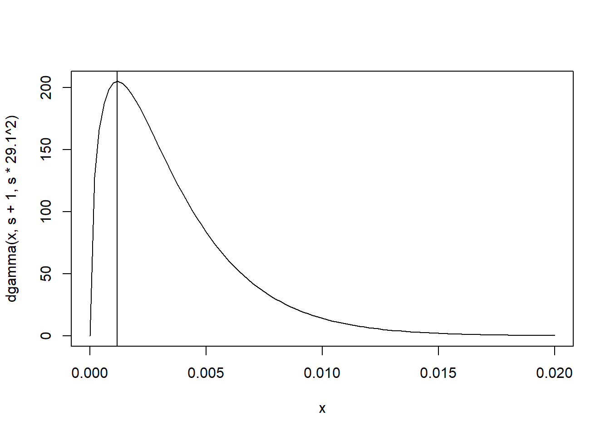
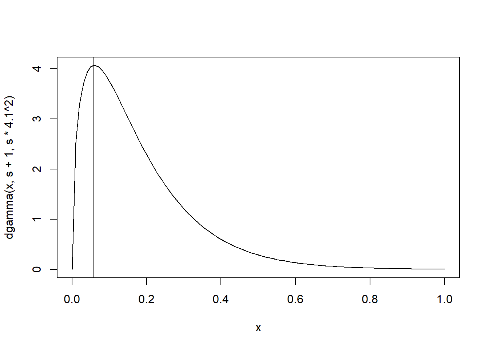
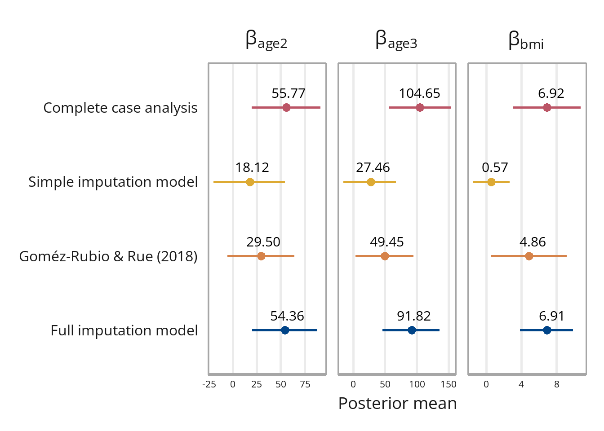
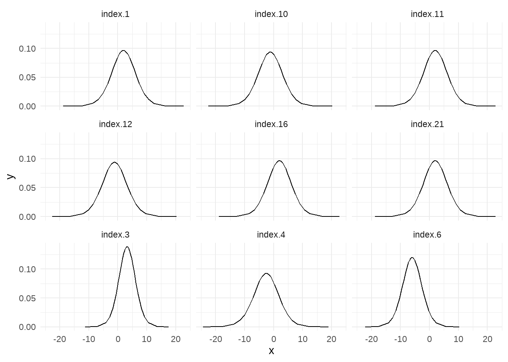

library(mice) # Just used for the nhanes2 data set
library(INLA) # INLA modelling
library(dplyr) # Data wrangling of the results
library(gt) # Tables
library(tidyverse) # Data wrangling and plotting
library(showtext) # Font
library(colorspace) # Color adjustmentsMissing covariate imputation
In this example, we use the nhanes2 data set from the mice R-package to illustrate how to do missing covariate imputation in INLA by using a measurement error model. As noted in the paper, the nhanes2 data set is really small, it only has 25 observations and 9 of them are missing, so this is not really a good application of this. However, we chose to use this as it is a data set that is commonly used in other missing data applications in INLA, and so we reasoned that using the same data set would make it easier to compare the implementations.
Loading packages
inla.setOption(num.threads = "1:1")Loading and preparing the data
# Using the nhanes data set found in mice:
data(nhanes2)
nhanes2 age bmi hyp chl
1 20-39 NA <NA> NA
2 40-59 22.7 no 187
3 20-39 NA no 187
4 60-99 NA <NA> NA
5 20-39 20.4 no 113
6 60-99 NA <NA> 184
7 20-39 22.5 no 118
8 20-39 30.1 no 187
9 40-59 22.0 no 238
10 40-59 NA <NA> NA
11 20-39 NA <NA> NA
12 40-59 NA <NA> NA
13 60-99 21.7 no 206
14 40-59 28.7 yes 204
15 20-39 29.6 no NA
16 20-39 NA <NA> NA
17 60-99 27.2 yes 284
18 40-59 26.3 yes 199
19 20-39 35.3 no 218
20 60-99 25.5 yes NA
21 20-39 NA <NA> NA
22 20-39 33.2 no 229
23 20-39 27.5 no 131
24 60-99 24.9 no NA
25 40-59 27.4 no 186n <- nrow(nhanes2)
# Manually dummy-code age:
age2 <- ifelse(nhanes2$age == "40-59", 1, 0)
age3 <- ifelse(nhanes2$age == "60-99", 1, 0)
# Center the response and continuous covariates
chl <- scale(nhanes2$chl, scale = FALSE)[,1]
bmi <- scale(nhanes2$bmi, scale = FALSE)[,1]Aim
We want to fit the model
\[ chl \sim \beta_0 + \beta_{age2} age_2 + \beta_{age3} age_3 + \beta_{bmi} bmi + \varepsilon, \] but there is missingness in bmi, so we will consider two different imputation models for this.
Simple imputation model
We first fit a model that is identical to the one in Gómez-Rubio and Rue (2018).
Specifying priors
# Priors for model of interest coefficients
prior.beta = c(0, 0.001) # Gaussian, c(mean, precision)
# Priors for exposure model coefficient
#prior.alpha <- c(26.56, 1/71.07) # Gaussian, c(mean, precision)
# Priors for y, measurement error
prior.prec.y <- c(1, 0.00005) # Gamma
prior.prec.u_c <- c(0.5, 0.5) # Gamma
#prior.prec.x <- c(2.5-1,(2.5)*4.2^2) # Gamma
# Initial values
prec.y <- 1
prec.u_c <- 1
#prec.x <- 1/71.07
prec.x <- 1/71.07Setting up the matrices for the joint model
Y <- matrix(NA, 3*n, 3)
Y[1:n, 1] <- chl # Regression model of interest response
Y[n+(1:n), 2] <- bmi # Error model response
Y[2*n+(1:n), 3] <- rep(0, n) # Imputation model response
beta.0 <- c(rep(1, n), rep(NA, n), rep(NA, n))
beta.bmi <- c(1:n, rep(NA, n), rep(NA, n))
beta.age2 <- c(age2, rep(NA, n), rep(NA, n))
beta.age3 <- c(age3, rep(NA, n), rep(NA, n))
id.x <- c(rep(NA, n), 1:n, 1:n)
weight.x <- c(rep(1, n), rep(1, n), rep(-1, n))
offset.imp <- c(rep(NA, n), rep(NA, n), rep(26.56, n))
dd <- data.frame(Y = Y,
beta.0 = beta.0,
beta.bmi = beta.bmi,
beta.age2 = beta.age2,
beta.age3 = beta.age3,
id.x = id.x,
weight.x = weight.x,
offset.imp = offset.imp)INLA formula
formula = Y ~ - 1 + beta.0 + beta.age2 + beta.age3 +
f(beta.bmi, copy="id.x",
hyper = list(beta = list(param = prior.beta, fixed=FALSE))) +
f(id.x, weight.x, model="iid", values = 1:n,
hyper = list(prec = list(initial = -15, fixed=TRUE)))Scaling of ME precision
Since we are not assuming any measurement error here, we need to “turn off” the error model by scaling the error precision to be very large (it makes no difference if we scale the precision only for the observed values or for the observed and missing values).
Scale <- c(rep(1, n), rep(10^8, n), rep(1, n))Fitting the model
set.seed(1)
model_missing1 <- inla(formula, data = dd, scale = Scale, offset = offset.imp,
family = c("gaussian", "gaussian", "gaussian"),
control.family = list(
list(hyper = list(prec = list(initial = log(prec.y),
param = prior.prec.y,
fixed = FALSE))),
list(hyper = list(prec = list(initial = log(prec.u_c),
param = prior.prec.u_c,
fixed = FALSE))),
list(hyper = list(prec = list(initial = log(prec.x),
fixed = TRUE)))
),
control.fixed = list(
mean = list(beta.0 = prior.beta[1],
beta.age2 = prior.beta[1],
beta.age3 = prior.beta[1]),
prec = list(beta.0 = prior.beta[2],
beta.age2 = prior.beta[2],
beta.age3 = prior.beta[2])),
verbose=F)
model_missing1$summary.fixed mean sd 0.025quant 0.5quant 0.975quant mode
beta.0 -11.89131 13.16973 -37.05880 -12.17257 14.82825 -12.18294
beta.age2 18.12289 18.96398 -20.21766 18.48721 54.44645 18.49874
beta.age3 27.45944 21.14449 -15.51345 27.95659 67.67487 27.97347
kld
beta.0 1.108285e-07
beta.age2 9.055501e-08
beta.age3 1.223463e-07model_missing1$summary.hyperpar mean sd
Precision for the Gaussian observations 0.0006743985 0.0002583297
Precision for the Gaussian observations[2] 1.2724258924 2.1420474924
Beta for beta.bmi 0.5727356400 1.0583120822
0.025quant 0.5quant
Precision for the Gaussian observations 0.0002906087 0.0006337427
Precision for the Gaussian observations[2] 0.0154530391 0.5524389252
Beta for beta.bmi -1.4699810503 0.5590272963
0.975quant mode
Precision for the Gaussian observations 0.001291454 0.0005585458
Precision for the Gaussian observations[2] 6.665079268 0.0171692640
Beta for beta.bmi 2.696668417 0.5004615766Full imputation model
This model includes age as a covariate in the imputation model.
Specifying priors
For the intercepts and slopes of the model of interest and imputation model we set very wide priors centered at zero.
# Priors for model of interest coefficients
prior.beta = c(0, 1e-6) # Gaussian, c(mean, precision)
# Priors for exposure model coefficients
prior.alpha <- c(0, 1e-6) # Gaussian, c(mean, precision)For the precision of \(y\) and \(x\) we set more informative priors. The precisions are given gamma priors, and in INLA this is parameterized by the shape and rate parameters. Let’s first look at the precision for \(y\).
We base our priors for \(x\) and \(y\) around the values that we want as the modes of the distributions. For \(y\), we look at the regression chl~bmi+age2+age3. The standard error is estimated to be \(29.1\). We decide we want \(1/29.1^2\) to be the mode of our prior. Since the gamma distribution with shape \(\alpha\) and rate \(\beta\) has mode \(\frac{\alpha-1}{\beta}\), we can choose \(\alpha = s+1\) and \(\beta = s\cdot29.1^2\) in order to get a distribution with mode equal to \(1/29.1^2\). Then we need to choose \(s\) to decide the spread, the variance of the inverse gamma distribution will decrease as \(s\) increases. For \(x\) we similarly construct the prior to have its mode at \(4.1\).
An alternative approach could be to construct an upper limit for the variance by choosing that to be the variance of the covariate itself, as well as some lower limit, and then select the inverses of these limits to be the 2.7% and 97.5% quantiles in the gamma prior. in our case, the variance of chl is \(2044\), so we would choose \(1/2044\) to be the lower limit for \(\tau_y\). For the upper limit, we decide on roughly a 10th of that variation, so the upper limit is \(1/204.4\). By specifying these points as the 2.7% and 97.5% quantiles, respectively, we can achieve the parameters of a gamma distribution with these quantiles through numerical optimization. We get the distribution \(\tau_y \sim G(3.4, 1588)\). Similarly, for \(x\) (bmi), we find that the sample variance of bmi is \(17.8\), and so we could set the lower limit of \(\tau_x\) to \(1/17.8\). Again, by choosing roughly a 10th of that variation we get a upper limit for the precision at \(1/1.78\), giving the gamma distribution \(\tau_x \sim G(3.4, 13.9)\).
# Priors for y, measurement error and true x-value precision
# Start by getting a reasonable prior guess for the standard error of the regression and exp. models
summary(lm(chl~bmi+age2+age3))$sigma[1] 29.10126summary(lm(bmi~age2+age3))$sigma[1] 4.160342# Use those values to create reasonable priors:
s <- 0.5
prior.prec.y <- c(s+1, s*29.1^2) # Gamma
prior.prec.x <- c(s+1, s*4.1^2) # Gamma
# We can visualize these priors:
curve(dgamma(x, s+1, s*29.1^2), 0, 0.02)
abline(v=1/(29.1^2))
curve(dgamma(x, s+1, s*4.1^2), 0, 1)
abline(v=1/(4.2^2))
# Initial values
prec.y <- 1/29.1^2
prec.u_c <- 1
prec.x <- 1/4.2^2Setting up the matrices for the joint model
Y <- matrix(NA, 3*n, 3)
Y[1:n, 1] <- chl # Regression model of interest response
Y[n+(1:n), 2] <- bmi # Error model response
Y[2*n+(1:n), 3] <- rep(0, n) # Imputation model response
beta.0 <- c(rep(1, n), rep(NA, n), rep(NA, n))
beta.bmi <- c(1:n, rep(NA, n), rep(NA, n))
beta.age2 <- c(age2, rep(NA, n), rep(NA, n))
beta.age3 <- c(age3, rep(NA, n), rep(NA, n))
id.x <- c(rep(NA, n), 1:n, 1:n)
weight.x <- c(rep(1, n), rep(1, n), rep(-1, n))
alpha.0 <- c(rep(NA, n), rep(NA, n), rep(1, n))
alpha.age2 <- c(rep(NA, n), rep(NA, n), age2)
alpha.age3 <- c(rep(NA, n), rep(NA, n), age3)
dd <- data.frame(Y = Y,
beta.0 = beta.0,
beta.bmi = beta.bmi,
beta.age2 = beta.age2,
beta.age3 = beta.age3,
id.x = id.x,
weight.x = weight.x,
alpha.0 = alpha.0,
alpha.age2 = alpha.age2,
alpha.age3 = alpha.age3)INLA formula
formula = Y ~ - 1 + beta.0 + beta.age2 + beta.age3 +
f(beta.bmi, copy="id.x",
hyper = list(beta = list(param = prior.beta, fixed=FALSE))) +
f(id.x, weight.x, model="iid", values = 1:n,
hyper = list(prec = list(initial = -15, fixed=TRUE))) +
alpha.0 + alpha.age2 + alpha.age3Scaling of ME precision
Since we are (again) not assuming any measurement error here, we need to “turn off” the error model by scaling the error precision to be very large (it makes no difference if we scale the precision only for the observed values or for the observed and missing values).
Scale <- c(rep(1, n), rep(10^8, n), rep(1, n))Fitting the model
set.seed(1)
model_missing2 <- inla(formula, data = dd, scale = Scale,
family = c("gaussian", "gaussian", "gaussian"),
control.family = list(
list(hyper = list(prec = list(initial = log(prec.y),
param = prior.prec.y,
fixed = FALSE))),
list(hyper = list(prec = list(initial = log(prec.u_c),
fixed = TRUE))),
list(hyper = list(prec = list(initial = log(prec.x),
param = prior.prec.x,
fixed = FALSE)))
),
control.fixed = list(
mean = list(beta.0 = prior.beta[1],
beta.age2 = prior.beta[1],
beta.age3 = prior.beta[1],
alpha.0 = prior.alpha[1],
alpha.age2 = prior.alpha[1],
alpha.age3 = prior.alpha[1]),
prec = list(beta.0 = prior.beta[2],
beta.age2 = prior.beta[2],
beta.age3 = prior.beta[2],
alpha.0 = prior.alpha[2],
alpha.age2 = prior.alpha[2],
alpha.age3 = prior.alpha[2])),
verbose=F)# Save results:
saveRDS(model_missing2, file = "results/model_missing2.rds")Fitting a complete case model
# Where is bmi missing?
missing_bmi <- is.na(bmi)
dd_naive <- data.frame(Y = chl,
beta.0 = rep(1, length(bmi)),
beta.bmi = bmi,
beta.age2 = age2,
beta.age3 = age3)[!missing_bmi, ]
# Formula
formula <- Y ~ - 1 + beta.0 + beta.age2 + beta.age3 + beta.bmi
# Fit model
set.seed(1)
model_naive <- inla(formula,
data = dd_naive,
family = c("gaussian"),
control.family = list(
list(hyper = list(prec = list(initial = prec.y,
param = prior.prec.y,
fixed = FALSE)))),
control.fixed = list(
mean = list(beta.0 = prior.beta[1],
beta.age2 = prior.beta[1],
beta.age3 = prior.beta[1],
beta.bmi = prior.beta[1]),
prec = list(beta.0 = prior.beta[2],
beta.age2 = prior.beta[2],
beta.age3 = prior.beta[2],
beta.bmi = prior.beta[2]))
)Results
The posterior means and standard deviations are presented in the table below. Note that the data set is quite small (25 observations where 9 are missing), and so the differing result should not be interpreted too seriously.
me_adjusted
|
naive
|
inla_mcmc
|
|||||||
|---|---|---|---|---|---|---|---|---|---|
| mean | lower | upper | mean | lower | upper | mean | lower | upper | |
| Model of interest | |||||||||
| beta.0 | -35.064 | -57.235 | -12.615 | -36.472 | -60.504 | -12.425 | 43.469 | -79.233 | 166.171 |
| beta.age2 | 54.362 | 20.132 | 88.165 | 55.768 | 19.718 | 91.796 | 29.501 | -5.526 | 64.528 |
| beta.age3 | 91.823 | 46.463 | 135.684 | 104.646 | 56.022 | 153.228 | 49.449 | 3.963 | 94.935 |
| Beta for beta.bmi | 6.909 | 3.867 | 9.907 | 6.919 | 3.100 | 10.737 | 4.864 | 0.540 | 9.188 |
| Imputation model | |||||||||
| alpha.0 | 1.984 | -0.961 | 4.957 | NA | NA | NA | NA | NA | NA |
| alpha.age2 | -3.126 | -7.819 | 1.536 | NA | NA | NA | NA | NA | NA |
| alpha.age3 | -4.562 | -9.524 | 0.236 | NA | NA | NA | NA | NA | NA |

We can also look at the imputed values themselves, they can be found in marginals.random$id.x inside the model object.
bmi_imputed <- model_missing2$marginals.random$id.x[missing_bmi]
bmi_imp_df <- data.table::rbindlist(lapply(bmi_imputed, as.data.frame), idcol = TRUE)
ggplot(bmi_imp_df, aes(x = x, y = y)) +
geom_line() +
facet_wrap(~ .id, ncol = 3) +
theme_minimal()
A summary can also be seen from summary.random$id.x:
model_missing2$summary.random$id.x[,1:6] ID mean sd 0.025quant 0.5quant 0.975quant
1 1 1.983770 4.343226e+00 -6.6253740 1.978517 10.6230257
2 2 -3.862500 9.999926e-05 -3.8626961 -3.862500 -3.8623039
3 3 3.207042 3.030242e+00 -2.8171938 3.208467 9.2312301
4 4 -2.577911 4.522133e+00 -11.6310330 -2.551554 6.3241357
5 5 -6.162500 9.999926e-05 -6.1626961 -6.162500 -6.1623039
6 6 -5.937317 3.470147e+00 -12.7941402 -5.949646 0.9641456
7 7 -4.062500 9.999926e-05 -4.0626961 -4.062500 -4.0623039
8 8 3.537500 9.999926e-05 3.5373039 3.537500 3.5376961
9 9 -4.562500 9.999926e-05 -4.5626961 -4.562500 -4.5623039
10 10 -1.142498 4.468577e+00 -10.0164346 -1.142498 7.7314355
11 11 1.983770 4.343226e+00 -6.6253740 1.978517 10.6230257
12 12 -1.142498 4.468577e+00 -10.0164346 -1.142498 7.7314355
13 13 -4.862500 9.999926e-05 -4.8626961 -4.862500 -4.8623039
14 14 2.137500 9.999926e-05 2.1373039 2.137500 2.1376961
15 15 3.037500 9.999926e-05 3.0373039 3.037500 3.0376961
16 16 1.983770 4.343226e+00 -6.6253740 1.978517 10.6230257
17 17 0.637500 9.999926e-05 0.6373039 0.637500 0.6376961
18 18 -0.262500 9.999926e-05 -0.2626961 -0.262500 -0.2623039
19 19 8.737500 9.999926e-05 8.7373039 8.737500 8.7376961
20 20 -1.062500 9.999926e-05 -1.0626961 -1.062500 -1.0623039
21 21 1.983770 4.343226e+00 -6.6253740 1.978517 10.6230257
22 22 6.637500 9.999926e-05 6.6373039 6.637500 6.6376961
23 23 0.937500 9.999926e-05 0.9373039 0.937500 0.9376961
24 24 -1.662500 9.999926e-05 -1.6626961 -1.662500 -1.6623039
25 25 0.837500 9.999926e-05 0.8373039 0.837500 0.8376961Model summary
summary(model_missing2)Time used:
Pre = 0.37, Running = 0.341, Post = 0.693, Total = 1.4
Fixed effects:
mean sd 0.025quant 0.5quant 0.975quant mode kld
beta.0 -35.064 11.234 -57.235 -35.115 -12.615 -35.116 0
beta.age2 54.362 17.124 20.132 54.442 88.165 54.443 0
beta.age3 91.823 22.567 46.463 92.108 135.684 92.131 0
alpha.0 1.984 1.491 -0.961 1.979 4.957 1.979 0
alpha.age2 -3.126 2.356 -7.819 -3.121 1.536 -3.121 0
alpha.age3 -4.562 2.461 -9.524 -4.533 0.236 -4.534 0
Random effects:
Name Model
id.x IID model
beta.bmi Copy
Model hyperparameters:
mean sd 0.025quant 0.5quant
Precision for the Gaussian observations 0.002 0.001 0.001 0.001
Precision for the Gaussian observations[3] 0.067 0.024 0.031 0.064
Beta for beta.bmi 6.909 1.534 3.867 6.917
0.975quant mode
Precision for the Gaussian observations 0.003 0.001
Precision for the Gaussian observations[3] 0.124 0.057
Beta for beta.bmi 9.907 6.948
Marginal log-Likelihood: -366.00
is computed
Posterior summaries for the linear predictor and the fitted values are computed
(Posterior marginals needs also 'control.compute=list(return.marginals.predictor=TRUE)')References
Gómez-Rubio, V., & Rue, H. (2018). Markov chain Monte Carlo with the integrated nested Laplace approximation. Statistics and Computing, 28, 1033–1051. doi: 10.1007/s11222-017-9778-y